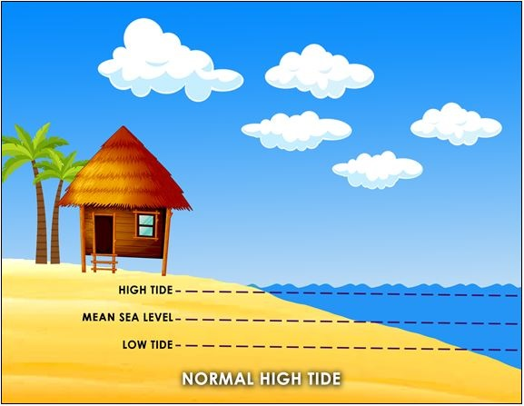
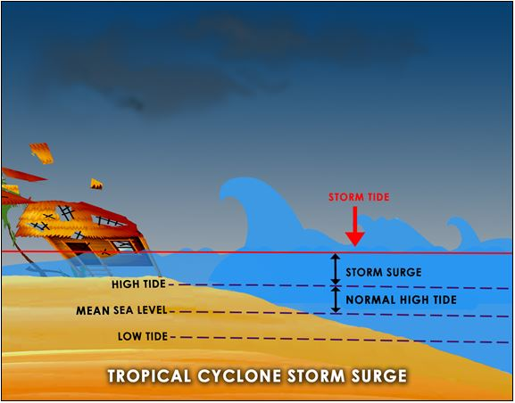

WHAT IS STORM SURGE?
It is also known as “Daluyong ng Bagyo” and it is the abnormal rise in sea level that occurs during tropical cyclones or “bagyo”. It is caused by strong winds and low atmospheric pressures produced by tropical cyclones. As the tropical cyclone approaches the coast, strong winds push the ocean water over the low-lying coastal areas, which can lead to flooding. This makes storm surges very dangerous.
In November 7, 2013, Typhoon Yolanda wreaked havoc from Micronesia to China and Vietnam, but it was in the Philippines that it caused the most devastation, destroying Tacloban City on the northeastern tip of Leyte Island. At least 6,000 people died in the Philippines, half of them in Tacloban, which one reporter described as a "corpse-strewn wasteland" in the immediate aftermath (Kinghorn, 2018).
Yolanda moved over the Leyte Gulf, which narrows at its northern end to form San Pablo Bay, en route to Tacloban City. Because of the storm's track and high winds, as well as the water depth and direction of San Pedro Bay, an unparalleled storm surge was channeled
into the shallow bay between the islands of Leyte
and Samar and into Tacloban City.
 
HOW DOES IT BEGIN?
According to Berkowitz and Galocha, as a hurricane travels over the open sea, its powerful winds act like a giant bulldozer collecting water and pushing it forward. When this buildup of water runs into land, the sudden rise in sea level above normal tides is called storm surge, and it is sometimes the most deadly and destructive part of a hurricane (2022).
To further understand what a storm surge is, check out this video:
To know more, go to the About page